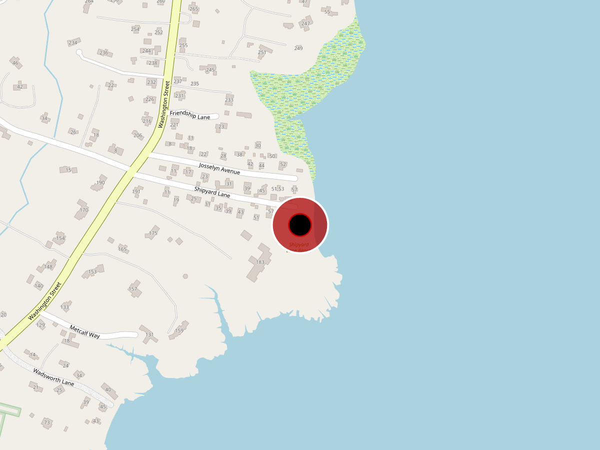

Maps


Parking & Access
- Capacity
- 27 cars · 0 trailers · 2 handicapped
- Address
- 99 Shipyard Lane, Duxbury MA
- Coordinates
- 42.0274, -70.6714
- Category
- Town Landing
1.2-acre sandy beach (Eben Ellison). Seasonal lifeguards, floating dock, calm water protected by breakwater. Sticker required Memorial Day–Labor Day.
Existing Conditions
No conditions data recorded yet.
Add field notes, photos, and observations here.Mitigation Plans
No mitigation plan recorded yet.
Add proposed improvements, timeline, and responsible parties here.